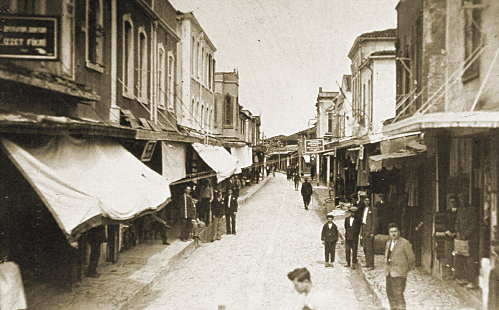
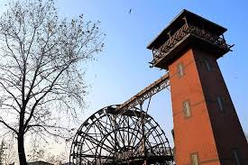
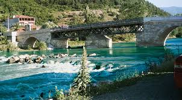
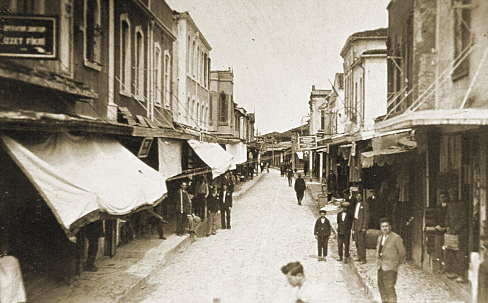
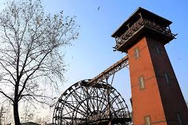
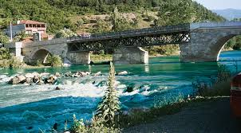

Sakarya’yı; tarih, kültür ve doğal güzellikleriyle Türkiye’nin kesişim noktasındaki şehir olarak tanımlayabiliriz. Tarihi İpek Yolu üzerinde bulunan ve asırlar boyu doğu ile batıyı birbirine bağlayan şehir, bir geçiş noktası olmuştur.
Sakarya tarih boyunca Hititler, Lidyalılar, Bithinya Krallığı, Roma İmparatorluğu ve Osmanlı İmparatorluğu gibi farklı kültürlere ev sahipliği yaptı. 1923’te Türkiye Cumhuriyeti’nin kurulmasıyla bir ilçe halini alan Sakarya, 1954’te il oldu. 2000 yılında Büyükşehir statüsü kazanan Sakarya’nın nüfusu bugün 1 milyonu aşmıştır. Marmara Bölgesinin doğusunda ulaşım açısından elverişli konumu; ekonomik ve sosyal yapısıyla dikkatleri üzerine çekiyor...
Orhan Cami
Osmanlılar tarafından Adapazarı’nın fethinden hemen sonra Orhan Gazi adına şehrin tam kalbine inşa edilen Orhan Camii; kubbesiz, tek minareli ve dikdörtgen yapıdadır. 1894 depreminde büyük zarar gördükten sonra dönemin Adapazarı Kaymakamı Nüzhet Paşa tarafından yeniden inşa edilen cami, 1967 ve 1999 depremlerinden sonra tadilattan geçirilmiştir. Yanı başındaki Tarihi Uzun Çarşı ile bütünleşen Orhan Camii, Sakarya’nın sembollerinden biridir.
Jüstinyanus Köprüsü (Beşköprü)
Serdivan ilçesi sınırlarında kalan ve halk arasında ‘Beşköprü’ adıyla da bilinen Jüstinyanus Köprüsü, Anadolu’daki Bizans Dönemi’nin en görkemli yapılarından biridir. 365 metre uzunluğa ve 10 metre genişliğe sahip 12 kemerli taş köprü, Doğu Roma İmparatoru Jüstinyanus döneminde M.S. 558-560 yılları arasında inşa edildi.
Tarihi Uzun Çarşı
Adapazarı’ndaki Osmanlı tarihi ve kültürel mirasının izlerini taşıyan Uzun Çarşı, bünyesinde bulundurduğu yaklaşık 100 dükkan ile şehrin ana ticaret merkezi konumundadır. Sakarya Büyükşehir Belediyesi tarafından aslına uygun şekilde restore edilen Uzun Çarşı, yaklaşık 250 yıllık tarihiyle Sakarya’nın kültürel zenginliklerini yaşatan sembollerden biridir.
Tarihi Çark
Adapazarı’nın su ihtiyacını karşılamak amacıyla ilk olarak Devoğlu Mustafa tarafından 1734 tarihinde inşa edilen Çark, daha sonra Adapazarı Kaymakamı Mehmet Nüzhet Bey tarafından 1894 yılında Alman ustalara modernize ettirildi. Uzun yıllar Adapazarı halkının su ihtiyacını karşılayan Tarihi Çark, Sakarya’nın önemli simgelerinden biridir.
2.Beyazıt Köprüsü
Sakarya’nın Geyve ilçesinde bulunan Bâyezid Köprüsü, Osmanlı Sultanı II. Bâyezid tarafından 1495/1496 tarihinde Sakarya Nehri üzerine inşa ettirilmiştir. Döneminde, İstanbul-Bağdat İpek Yolu’nun önemli kavşak noktalarından birinde bulunan tarihi taş köprünün mimarı ve mühendisi Abdullah Fakir’dir.